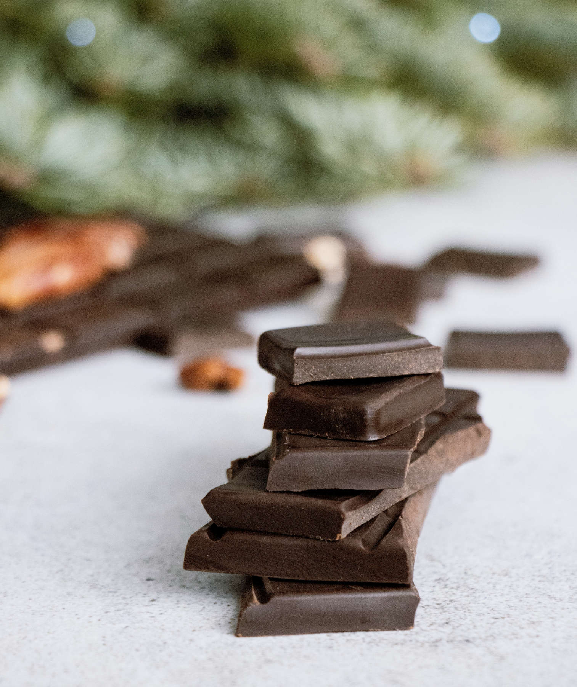

Super Easy Dark Chocolate

Photo Credit to Tetiana Bykovets on Unsplash
Home
Description
This is a super easy and fun way to make homemade untempered dark chocolate with only a microwave.
Ingredients:
- 1/2 Cup of Refined Coconut Oil
- 1/2 Cup of Unsweetened Cocoa Powder
- 3/4 Cup Powdered Sugar
- (Optional) Vanilla Extract
- (Optional) Chrushed Peppermints
Directions:
- Place coconut oil in a bowl and microwave until fully melted.
- Mix in cocoa powder until fully incorperated.
- Slowly mix in powdered sugar. Mix well until smooth.
- If desired, add in 1/2 teaspoon or less vanilla extract. Stir.
- Pour chocolate into silicone molds or into a small shallow dish lined with parchment paper to make bark.
- If desired, add crushed peppermints on top of bark.
- Place chocolate into the freezer or refrigerator and let harden.
- Pop fully set chocolate out of molds or lift out of container. If you made bark, cut into smaller jagged pieces.
- Enjoy your chocolate!
Recipe from Some Guy on the Internet and adapted by love2sketch